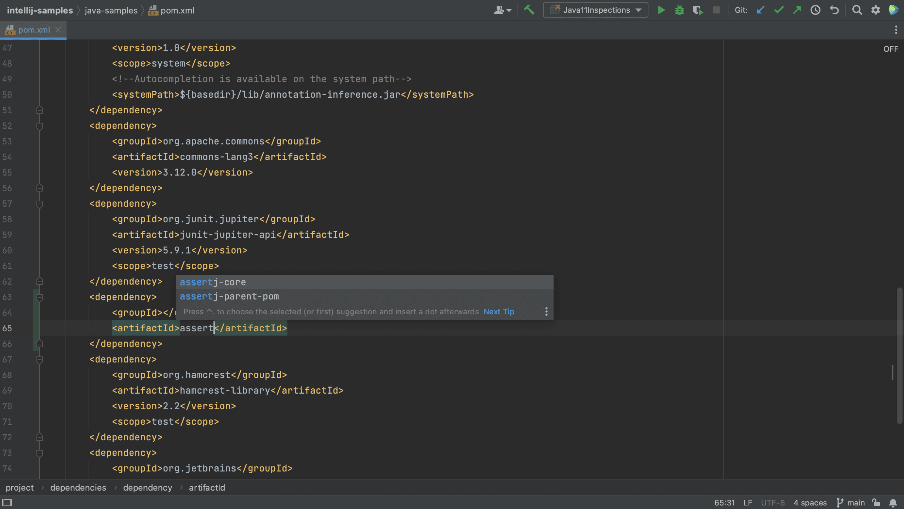

Что это: IntelliJ IDEA – это коммерческая, но с доступной бесплатной версией (Community Edition), мощная IDE, разработанная компанией JetBrains. Изначально создавалась для Java, но сейчас поддерживает множество других языков.
-
Преимущества:
- Интеллектуальное автодополнение кода: Предлагает более точные и контекстно-зависимые подсказки, чем большинство других IDE.
- Рефакторинг: Улучшенное автоматическое переименование переменных, извлечение методов и других элементов кода.
- Глубокая интеграция с Git и другими системами контроля версий: Удобные инструменты для работы с Git, включая визуальное представление истории изменений.
- Профилировщик производительности: Позволяет анализировать производительность приложения и выявлять узкие места.
- Поддержка различных технологий: Интегрируется с различными фреймворками, базами данных и другими технологиями.
- Расширяемость: Большое количество плагинов для расширения функциональности.
- Отличная поддержка Java: Специально оптимизирована для разработки на Java, обеспечивая превосходную производительность и удобство использования.
Для чего: Прекрасно подходит для разработки на Java, Kotlin, Android (с плагинами), а также для разработки на других языках, включая Python, JavaScript, PHP и др. Идеальна для крупных проектов, где важна производительность и удобство работы с большим объёмом кода.